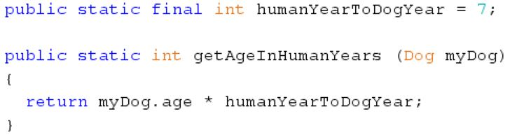

Welcome to my tutorials section! In this tutorial, I will be giving you an introduction to Object-Oriented Programming in Java, and I will explain
a variety of concepts related to OOP (short for Object-Oriented Programming) and a bunch of examples demonstrating them.
Before we actually introduce OOP, we'll talk about procedural programming. Procedural programming is when you have a program that runs from
start to finish with a flow. Languages like C and Turing follow this style of programming. Most other languages such as Java and C++ are Object-Oriented
languages, meaning that they involve classes acting as blueprints for objects. Each class comprises of methods and variables,
which represent behaviors and attributes of the object, respectively.
An object is something created from a template (or class), through which you call instance methods. Each object of a class owns its own
set of instance methods and variables, which can only be called/accessed through the object. Each object has its own name (or identifier),
set of attributes (or instance variables), and behaviors (instance methods). Here's an example of a simple class:
I will be referring to this example to introduce a bunch of new things now, so take your time to read through the code and try to understand what's
going on. If you don't fully understand, don't worry because now we'll be going through the code together.
First of all, let's identify what the components of the class. The class is a blueprint for Dog objects (we'll get to making these objects later).
The attributes (instance variables) of each Dog object are 3 Strings for the dog's name, breed, and owner's name as well as an integer for the dog's age. We'll get to
the part that looks like a method called Dog later, but the behaviors (instance methods) of Dog objects are incrementAge (which indicates that the dog
has gotten 1 year older), getOwnerName (which gives us the dog's owner's name), and changeOwner (which indicates that the dog is switching owners).
In summary, the Dog class acts as a blueprint to set up dog objects, setting up the generic attributes and behaviors of dogs.
Now, the thing that looks like a method with no return type and called Dog is known as a constructor. A constructor is used to set up (construct)
an object, such as its attributes. If no constructors are defined, Java automatically creates a default no-arguments constructor. Every constructor
must have the same name as its class and must not have a return type. Also constructors can be overloaded so that you have multiple constructors with different parameters so you can set up different attributes.
For example, here if we wanted to create a constructor to make a Dog object representing a pup that's just been born, we could only have parameters
to set the other instance variables and set the age variable equal to 0. The choice of 2 constructors makes it more convenient for the user:
You may have also noticed the "this" keyword in the body of the constructors. "this" is used so that the compiler does not get confused between
the paramters and instance variables (which have the same name). Whenever "this" is used, it refers to this class (for our example, the Dog class). In this case, the line "this.name = name"
means set the Dog class's instance variable "name" equal to the parameter called "name".
Now that we've learned the basics of OOP, we'll talk a bit about static methods and variables. Basically, a static method/variable is one that
belongs to the class, not the object. In other words, while each object of a class has its own copy of the instance methods/variables, all objects of a class
share that class's static methods/variables. You do not need to create a class's object to call/access its static methods/variables. You would use
static methods in cases where you want to define a generic behavior that is the same for all objects of a class. Static variables are often used
for constants that do not need to change for each object of a class. For example, in our Dog class, we could have a static method that converts the
given dog's age into human years. We could also use a static constant (final) variable to store the ratio of human years to dog years (7 human years is 1 dog year) because
that ratio is not going to change so it should be constant and it is common to all dogs so it should be static:

Now that we know enough about the components of a class, let's learn how to actually use a class. A class is used inside of a main method, typically
inside a driver class. A driver class is a class that creates objects of other classes and actually runs the program in a main method. To make
an object of a class, you need to first give that object a name (or identifier). Then you can either instantiate that object at the same time as
declaration or you can just declare it but instantiate it later. If an object has not been instantiated yet, the reference's value is null.
The reference is the actual pointer (like a variable name) that represents that object and points to its memory address.
You can call methods and access variables through the reference:
For static methods and variables, you call/access them by using the class name. This means that you do not need to create an object of the class
to use those methods or access those variables.
By this point, you might be wondering what the keyword "public" is doing in the program. This question brings us to the first of the "Big 3"
concepts of OOP - encapsulation. The keyword "public" denotes that the specified method/variable can be accessed or changed both inside or
outside of that class. We could also declare them as "private" (there are also others such as protected but we'll only focus
on public and private), which would mean that the specified method/variable can only be accessed or changed inside that class. In short, encapsulation
is when you declare methods/variables as private for enhanced security so that outside programs cannot directly access those methods/variables.
By convention in a Java program, instance variables should be private and there should be public "setter" and "getter" (also known as accessor
and mutator) methods to allow controlled access to these variables. Here's a simple scenario which shows why this is useful:
As you can tell, the lack of security means that the user can set potentially invalid values for instance variables which could mess up the program.
However, encapsulation allows the programmer to ensure that instance variables will only be set to valid values:
Now we'll talk about the second of the "Big 3" concepts of OOP - inheritance. Inheritance is basically when a new class is created as
an alteration of another class. The altered class is called a subclass while the original class is called the superclass. If it helps,
think of the superclass as a sort of parent class that lays out the generic attributes and behaviors for its children, and as each subclass as a child
of the parent that has essentially the same attributes/behaviors but also has a few of its own. In Java, a subclass can call all methods of its superclass
(except for private ones of course). You denote that a class inherits from another class by using the "extends" keyword. For example, here
is a simple implementation of a Mammal (superclass) and Dog (subclass) class:
By this point, we've covered most of the basics of OOP. Now we'll be getting into more of the complex topics, starting with abstract classes.
In short, abstract classes are classes that have been created to be extended, not instantiated. They provide the basic framework for their subclasses,
including abstract methods which must be implemented in all classes that extend abstract classes (minor caveat explained later), and the class's own
methods/variables. There can also be constructors, but you cannot instantiate abstract classes. However, you can use those constructors through constructors
of the abstract class's subclasses. You can do this by using the "super" keyword, where super represents the superclass's name.
For example,
say you have a class for a stone. If you think about it, you can't really have a "stone" object. You need to be more specific, for example,
granite, obsidian, etc. An abstract class called Stone should be created, and it would have multiple subclasses, such as Granite and Obsidian.
Each stone has its own density, which can be used to calculate the mass given volume. Therefore, it makes sense to define an abstract method in the Stone
class called calculateMass and then provide a unique implementation of this method in each subclass. Here is an implementation of example
Stone and Granite classes:
As you can see, the use of super in the Granite class constructor calls the Stone class constructor, and this super line must be the first line
of the subclass constructor. Also, since Granite is a subclass of Stone, it can access all Stone class methods, such as the getVolume method that
is used in the Granite class implementation of the calculateMass method.
Finally, one minor caveat to the rule that all subclasses of abstract classes must provide implementations of all abstract methods is that
this does not have to hold true if the subclass is an abstract class itself. In that case, the subclass of this subclass gets this responsibility
passed down.
The next thing we'll be learning about is the interface. Basically, interfaces set out rules for how classes that implement that interface
should look like. For example, let's say we want to define a group of classes as having objects with color. We could create an interface called
Colored and implement this in that group of classes. Interfaces only consist of public abstract methods (which must be given implementations in
all classes implementing the interface). They have no constructors, variables, or methods that are not public abstract. However, they can have
final (constant) variables. For example, if we think about the Colored interface that we thought about, it might have an abstract method
called getColor, which would be given unique implementations to return the color of the object in each class implementing Colored. Here are example
implementations of a Colored interface and a Balloon class that implements that interface:
The next thing we'll be talking about is about the equals() method and ==. In Java, every class inherits from the Object class. This means that
every class can use the methods from the Object class. The equals() method in the Object class can be used to compare two objects. Both this method
and == just compare the memory locations of the two objects to see if they are the same. For primitive data types, == actually compares the values
of the two variables or literals. However, if you want to compare the value values of two objects, you have to use an overridden version of the
equals() method. Overridden methods are methods with the same name and parameters inside a superclass and subclass. This means that when the method
is called on an object of the subclass, the customized overridden method would be used. For example, the String class in Java provides an overridden
method of the equals() method that can be used to compare two Strings.
Another important method inside of the Object class is the toString() method, which is automatically called whenever an object is put inside
a print or println statement. It converts the object into a String which contains the memory address of the String. However, similarly to
the equal() method, it can be overridden to output something useful.
Speaking of Strings, let's talk a bit about the Java String Pool. Although Strings are objects, they are a bit different
because of String literals (which are basically literal values of Strings like "hi").
Technically, you're supposed to create Strings like you would create any object (like String s = new String ("Hi")).
Since Strings are used so much, Java provides a way to instantiate them like primitive data types using literals (String s = "hi").
This means that unlike other objects, all Strings used in your code are stored in the Java Virtual Machine String Pool
If you try to create another String object which stores a String literal already in the String Pool, then Java makes your new String
object point to the String literal already in the pool, e.g. String s1 = "hi" and String s2 = "hi" both point to the same object in memory
(or in the String Pool), String s1 = new String ("hi") and String s2 = new String ("hi") do not point to the same object in memory
because an actual constructor, not literal, is being used to instantiate the objects so the String Pool isn't checked.
Now I'll just go through a few tips and tricks when solving OOP-related problems. First of all, OOP is a very complicated concept to understand.
The whole idea of references, overridden methods, constructors, etc. can get overwhelming. For this reason, it is very important to build yourself
an intuition for each of the concepts and how they work, instead of merely memorizing the rules. For example, if you have the following code segment:
SomeClass c = new SomeClass (...);
SomeClass d = c;
d.someMethod ();
It is important to realize that since the reference d points to whatever the reference c is pointing to in memory, d and c both point to the same
thing. This is why changing the object through d also means that the object c is pointing to has been altered.
Below is a code example of OOP that teaches the basic concepts in 3 increasing levels of difficulty: